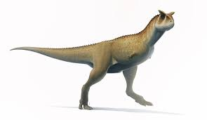

O Carnotauro foi um dinossauro carnívoro único que habitou a atual América do Sul. Seu nome significa "touro carnívoro", uma referência aos dois chifres marcantes que tinha acima dos olhos. Ele era extremamente veloz, possuindo pernas longas e musculosas feitas para correr atrás de presas rápidas. Assim como o T-Rex, chamava a atenção por ter braços minúsculos, quase totalmente inúteis.